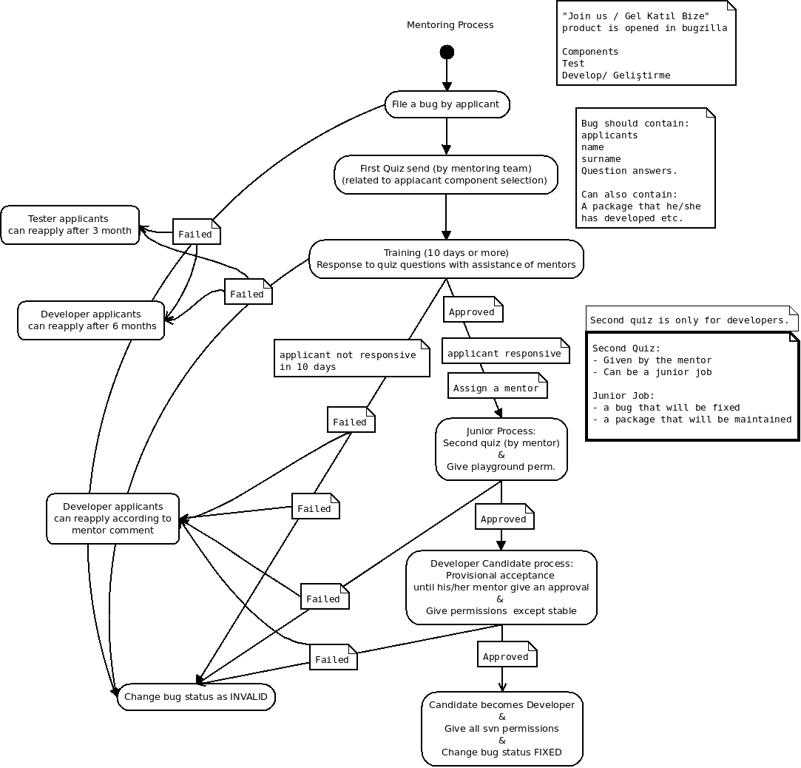

"Gel Katıl Bize/ Join us" ürünü açılması
Bu ürün için "Geliştirme", "Test", "Çeviri" bileşenlerinin açılması
Adayın e-posta gönderebileceği fakat listede bulunan e-postaları okuyamayacağı adayın gözden geçirilip onaylanacağı gizli bir mentor listesinin oluşturulması.

Aday "Gel Katıl Bize" ürününde istediği bileşen için hata açar.
Hatanın başlığı "Test/Geliştirme/Çeviri Adaylık Ad Soyad" şeklinde olmalıdır.
Hatanın "Ayrıntılar" kısmı aşağıda bulunan bilgilerin cevaplarını içermelidir:
- Adayın Adı Soyadı ve e-posta adresi.
- Hiç bir özgür yazılım projesine katkı verdiniz mi?
- Daha önce kullandığınız dağıtımlar nelerdir?
- Ne zamandır ve hangi seviyede Pardus'u kullanıyorsunuz?
- Bir özgür yazılım projesine katkıda bulunmak sizin için ne ifade ediyor?
- Daha önce herhangi bir özgür yazılım projesine katkıda bulundunuz mu? Evetse, hangi projeye, ne şekilde, ne kadar zamandır?
- Pardus'a neden katkı vermek istiyorsunuz?
- Pardus'a haftada ne kadar vakit ayırabilirsiniz?
- Kısa özgeçmişin eke eklenmesi
Çevirmen için quiz soruları ve mentor süreci bulunmamaktadır, çevirmenin başvurması ve yukarıda bulunan soruları cevaplaması kabul için yeterli olacaktır.
Aday başvuru sırasında sorulan soruları lakayıt bir şekilde cevaplamış ise hatası direk olarak kapatılır.
Adayın başvurması sonrasında adaya ilgili quiz soruları gönderilir. (Güvenlik hatalarına uygulanacak yöntem uygulanacaktır.)
Geliştirici adayları soruları yaklaşık 8 gün gibi bir süre içerisinde mentor listesi mailine gönderilir.
Testçi adayları soruları yaklaşık 15 gün gibi bir süre içerisinde mentor listesi mailine gönderilir.
Eğer adaylara 20 gün içerisinde mentor listesi veya bugzilla üzerinden ulaşılamıyor ise hatası kapatılır.
Aday ulaşılabilir durumda ve quiz sorularını ilgili gün içerisinde gönderilmiş ise, cevaplar bugzilla üzerinde mentorlar tarfından gözden geçirilip onaylanır.
Gözden geçirme olumsuz sonuçlanır ise adayın açmış olduğu hata kapatılır.
Aday bu aşamada reddedildiğinde; eğer test için başvurmuş ise 3 ay sonrasında, geliştirme için başvurmuş ise 6 ay sonrasında tekrar başvuru yapabilecektir.
Gözden geçirme olumlu sonuçlanmış ise:
Aday testçilik için başvurmuş ise test ekibi üyeliğine kabul edilir ve test listesine yazma onayı verilir.
Aday geliştirici olmak için başvurmuş ise:
Quiz'de bulunan sorular doğrultusunda adayın ilgili olduğu alana göre, aday ile daha yakından ilgilenecek bir mentor atanır.
- Adaya mentor tarafından küçük bir iş verilir. (not: Küçük iş çözülecek bir hata veya yapılacak bir paket olabilir.)
- Bu süreç içerisinde adaya playground için svn izinleri verilir.
- Bu süre içerisinde yapmış olduğu paketlerin sahibi mentor'u olacaktır.
- Aday mentorun belirtmiş olduğu sürede bu verilen küçük işi yerine getiremez ise
hatası kapatılır. (playground svn izinleri de kapatılır)
- Aday gözden geçirme sürecini geçer ise:
- uludağ, devel vb. svn izinleri verilir ve geliştirici olarak kabul edilir. Adaylık sürecinde yapmış olduğu paketler ve diğer işler mentor'undan adaya devredilir.
- Mentor bu yeni geliştiricinin olgunluğa eriştiğine emin olana kadar yeni geliştiriciyi yakından takip eder ve geliştiricinin paketlerinin gözden geçirilme sürecine katılır.
- Geliştirici mentor'u olduğu sürece paket gözden geçiremeyecektir.
- Mentor geliştiriciden emin olduğunda geliştiricinin mentorluğunu bıraktığını bugzilla üzerinden yorum olarak ilan eder ve geliştirici bu andan itibaren paket gözden geçirebilme iznine sahip olur.
Adayın açmış olduğu hata adayın tüm süreçlerini takip etmek için kullanılır ve Pardus için gönüllü işler yapmaktan vazgeçene kadar açık kalır.
Adayın süreçleri:
- Geliştirici olarak kabul edilmesi
- Testçi olarak kabul edilmesi
- Çevirmen olarak kabul edilmesi
- Askere gitmesi
- Emekli olması
- Tatile gitmesi vb.
Adaya bir mentor atanana kadar (bugzillla'yı gözden geçirip, quiz iletme ve pingleme, mentor atama uyarısı verme vb.) idare edecek iki kişi olacaktır.
Mentor atandıktan sonra adayın sorumluluğu mentorunda bulunmaktadır ve bugzilla'da gerekli yorumları mentoru yapacaktır.
Aday geliştirici olduktan sonra ise kendi durumu ile ilgili yorumları askerlik, ayrılma, tatile gitme gibi durumları kendi girer.
Geliştirici olduktan sonra adaydan haber alınamaması durumunda eski mentor'u gerekli ping'leri bugzilla üzerinden yapar ve geliştiriciye ulaşamaması durumunda hatasını gerekli açıklamayı yaparak kapatır.